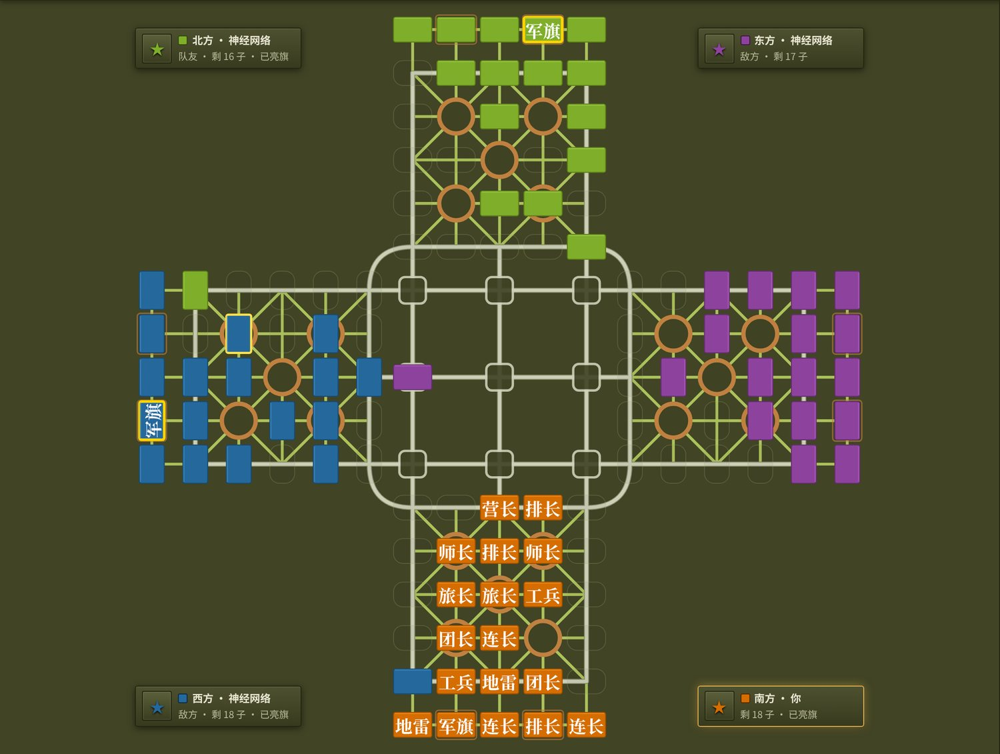
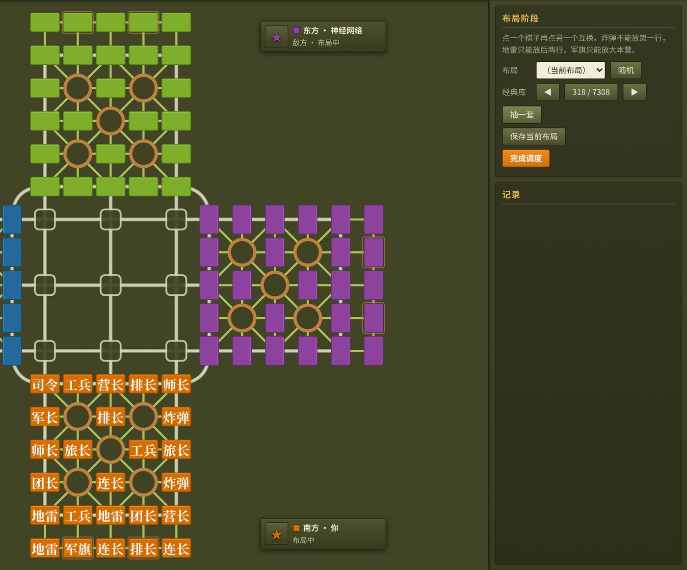

4049 局 QQ 复盘，一张家用显卡，训练 37 分钟。它在浏览器里陪你下完一整局，想一手四十来毫秒，不联网。

棋类 AI 的里程碑大多是两人对局、双方看得见全部棋子。四国军棋两样都不占，开源世界里几乎没有像样的 AI。
两个人，信息完全公开，搜索能算到底。
有隐藏信息，但一手牌几轮下注就结束。
和军棋最像：棋子背面朝上，碰了才知道大小。
要猜三家的暗子，还要和一个不能说话的队友配合。
训练棋类 AI 有两条路。数据现成、算力有限的时候，先走第一条。
微软的麻将 AI Suphx 就是先用人类牌谱做监督学习，再上强化学习。模仿学习的模型正好当自对弈的起点，从随机乱走开始会贵得多。
QQ 游戏每局可以存一个 .jgs 复盘文件。玩家在网盘、论坛和 QQ 群里分享了很多年，一压缩包动辄几百局。
.jgs 是没有公开文档的二进制格式。下面是一局真实复盘的开头几十个字节（昵称和 QQ 号已打码）。
字段布局参考了开源项目 myjgs 的头文件；坐标怎么旋转、碰子结果几位代表什么，是拿自己的引擎逐手重放对出来的。
每一手都要在自家引擎里走一遍：起点必须有子、走法必须合法、碰子结果必须和 QQ 记下的一致。对不上的整局不要。
手重放完毕，覆盖 4151 局
手走法不合法，属于文件截断或损坏
次碰子结果不一致，原因是某家退出后 QQ 仍把它的子留在棋盘上
我们原来的规则是炸弹扛旗后留在原地。复盘里 17 局都是炸弹和军旗一起消失，于是改了游戏规则，和 QQ 对齐。
模型是在自家引擎里下棋的。训练数据只要有一处和引擎规则对不上，它学到的「经验」在游戏里就会走出非法着法，或者算错局面。
棋盘上 129 个格子各算一个 token，再加 1 个全局 token。每个格子只写走子方能知道的信息，别人的暗子是什么，模型看不到。
视角旋转：不管轮到哪家，都把棋盘转到「走子方坐南」。四个座位共用一套权重，数据量等于翻了四倍。全局 token 另记 15 个数：多少步没吃子、第几步、各家死活、谁亮了旗、各家剩几个子。
人下暗棋靠记：这个子动过，就不是地雷；它吃了我的师长还活着，就只能是司令或军长。编码时替模型把这些排除做完。
第一排排除地雷、炸弹、军旗，是因为布局规则不允许它们放在那里。自检：69 万个局面里，每个暗子的真实兵种从来没被错误排除过（0 违例）。
130 个 token 一起进网络，每个格子都能看到其他所有格子。输出两样东西：下一手走哪、这局大概会怎样。
129 个格子 + 1 个全局，逐格投影到 256 维
对每个合法走法，用「起点格 × 终点格」做双线性打分，再在合法走法里做 softmax。非法走法根本不参与
负 / 和 / 胜 三分类：站在走子方看，这局最后会怎样
不租云，用家里那台 PC 上的 RTX 5060 Ti 16G。整个数据集 818 MB，一次搬进显存，训练时不用再读硬盘。
| 要做的事 | 够用的卡 |
|---|---|
| 这次：4000 局模仿学习 | RTX 5060 Ti 16G 就够，显存还有富余 |
| 1 万局以上模仿学习 | 同一张卡，训练时间按数据量线性增加 |
| 自对弈强化学习 | 瓶颈在模拟多少局，4090 / 5090 更快，用不着 H100 |
在没参与训练的约 400 局验证集上，让模型猜「人实际走了哪步」。平均每步有 54 种走法，乱猜只能中 1.9%，原来的启发式引擎中 9.1%。
价值头（猜输赢那部分）第 5 轮以后开始轻微过拟合，验证损失从 0.779 回升到 0.805，数据还不够多。
神经网络执南北，引擎执东西，布局取验证集里的真人布局；同一组布局两边各执一次，抵消布局好坏的运气。
50 组布局 × 换边，平均每局 108 手。这个比分只能说明原来的引擎太弱，已经不够当标尺，下一把尺子得是真人。
真实对局，从第一手到扛旗，全明视角自动播放。开局它被引擎的两个司令连吃好几子，胜率估计一路跌到 10%；第 79 手北方军长扛下东方军旗，第 87 手南方工兵扛下西方军旗。
模型、推理库、布局库都是本地文件，网页打开就能下。第一次加载约 34 MB，之后走浏览器缓存。
训练好的权重导出成 20 MB 的 ONNX 文件，输入是展开好的浮点特征
和 Python 版逐位比对，最大误差 1.4×10⁻⁶，网页里的局面和训练时一模一样
多线程要服务器配额外的安全响应头，静态托管给不了；单线程实测一手 43 毫秒
模型只学了走子，没学布局。你也能在「经典库」里翻、换子、存成自己的

它学会的是「大多数人在这个局面会怎么走」，还没学会怎么赢。
从翻网盘找复盘，到在浏览器里和它下完一局。